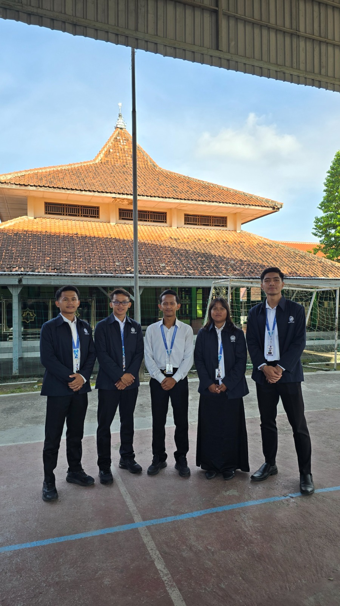

DOKUMENTASI KEGIATAN
Visualisasi aksi nyata, inovasi pedagogi, dan momentum transformatif selama melaksanakan Praktik Pengalaman Lapangan (PPL) program PPG Prajabatan PJOK di sekolah mitra.

Foto Bersama DPL dan GP
Momen foto bersama Dosen Pembimbing Lapang dan Guru Pamong sebelum kegiatan PPL selesai.

Kunjungan Monev
Kunjungan Monev dilakukan untuk mengevaluasi pelaksanaan kegiatan dan memberikan masukan untuk peningkatan.

Praktik Mengajar
Momen praktik mengajar di kelas terkait penjelasan teori.

Kunjungan Museum
Melakukan pendampingan murid SMKN 3 Yogyakarta dalam kunjungan ke museum Vredeburg dan Gedung Agung.

Rekan PPL Terbimbing
Foto bersama rekan-rekan PPL yang sedang terbimbing di SMKN 3 Yogyakarta.

Refleksi Akhir
Momen refleksi akhir setelah kegiatan PPL selesai, di mana mahasiswa berbagi pengalaman dan pemahaman yang telah diperoleh.